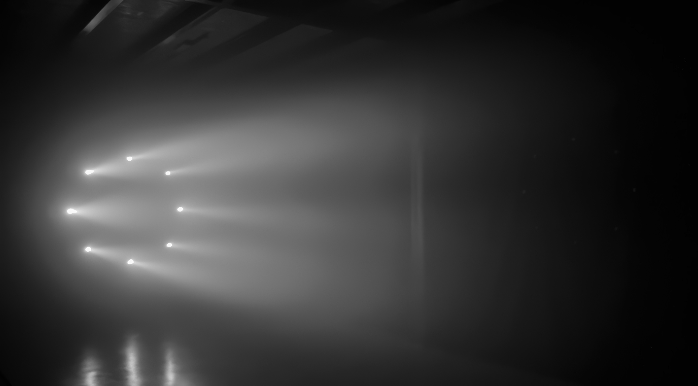
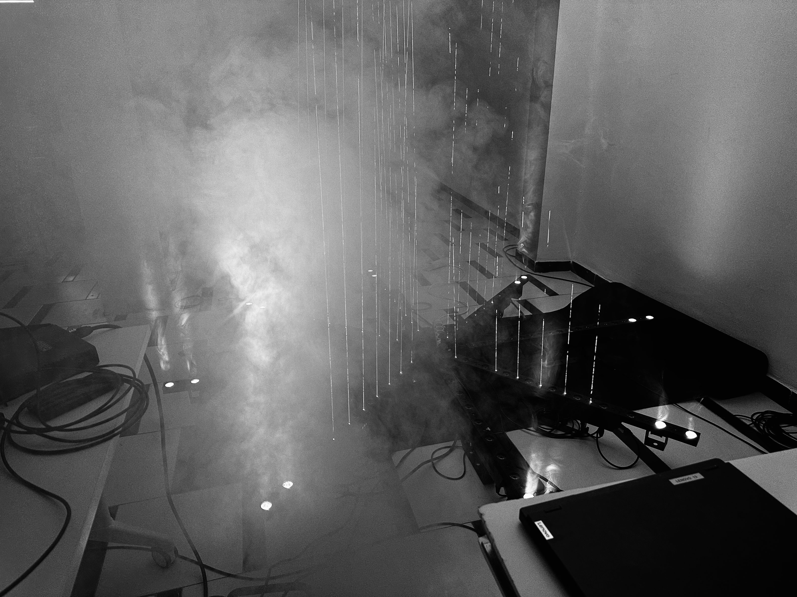
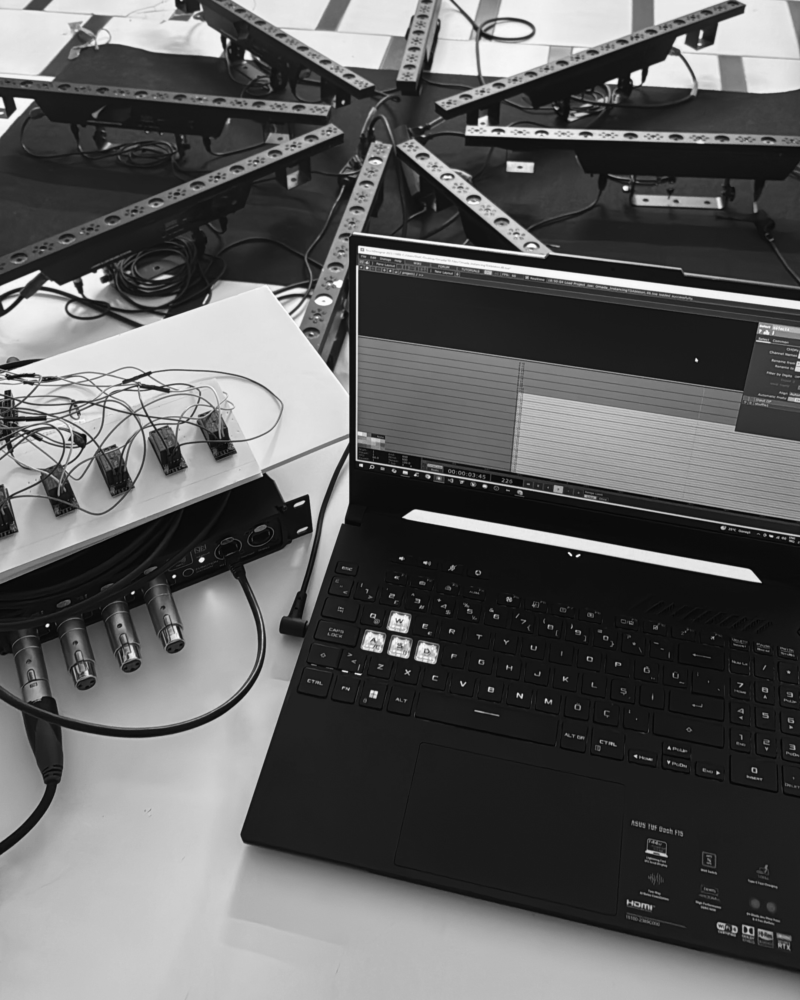

Omada
Artwork Description
Omada is a light installation that creates a multisensory audiovisual experience. By exploring the perception of light within space, it invites viewers into an immersive environment where light and sound interact in harmony.
Emphasizing the spatial qualities of the medium, it shapes perception through light in motion. Running in real time via TouchDesigner, the installation responds dynamically to sound, sculpting space moment by moment, creating a presence that continuously evolves.
Process Images




